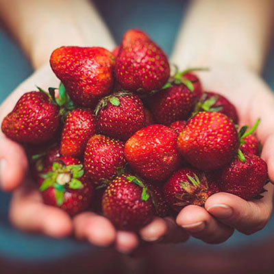

Los batidos naturales son una forma fácil y deliciosa de mejorar tu salud y aumentar tu energía durante el día. Aquí te presentamos los 5 mejores batidos naturales que puedes hacer en casa con ingredientes frescos y saludables..

Cosechando
Seleccionamos ingredientes frescos de calidad.